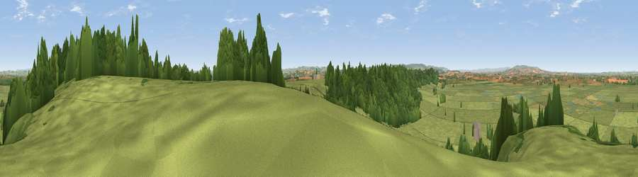

Viewpoint near Curry Rivel
#16021 in England · top 41% of its area beats it · near Curry RivelThe view, rendered

A 360° render of this exact spot computed from the terrain model, tree cover and land cover — summer colours, afternoon light, calibrated against photographs of famous viewpoints. Real trees, hedges and buildings will differ in detail.
The panorama
Grey silhouette: terrain skyline in each direction (720 bearings, Earth curvature and refraction included). Dashed green: skyline with trees (+15 m) and buildings (+8 m) as obstacles. Blue strip: how far the ground is visible on each bearing.
Where the view opens
Wedge length = distance to the farthest visible ground on that bearing (vegetation-aware). Rings at 10, 25 and 50 km.
What fills the view
69% grassland · 25% woodland · 5% cropland ·
Angular shares of the visible panorama (visual magnitude), not map area. Landscape diversity 0.36 (0–1 Shannon).
Key numbers
More beautiful places nearby
The staircase of upgrades: each row has a higher view potential than everything closer. Driving times are estimates from straight-line distance, calibrated against real road routing — check an actual route before setting out.
| Place | Direction | Drive | Score |
|---|---|---|---|
| Viewpoint near Fivehead | SW · 1 km | ~3 min | 61.0 |
| Viewpoint near Fivehead | SW · 2 km | ~5 min | 63.2 |
| Viewpoint near Fivehead | WSW · 3 km | ~7 min | 63.7 |
| Viewpoint near Curry Mallet | WSW · 5 km | ~11 min | 68.0 |
| Viewpoint near North Petherton | NW · 13 km | ~23 min | 71.2 |
| Ham Hill | SE · 13 km | ~24 min | 73.5 |
| Socombe Hill | N · 13 km | ~24 min | 76.4 |
| Viewpoint near Buckland St. Mary | SW · 14 km | ~25 min | 77.3 |
51.02255, -2.88999 · source: screening · position refined by local search. Computed location — check access rights before visiting.